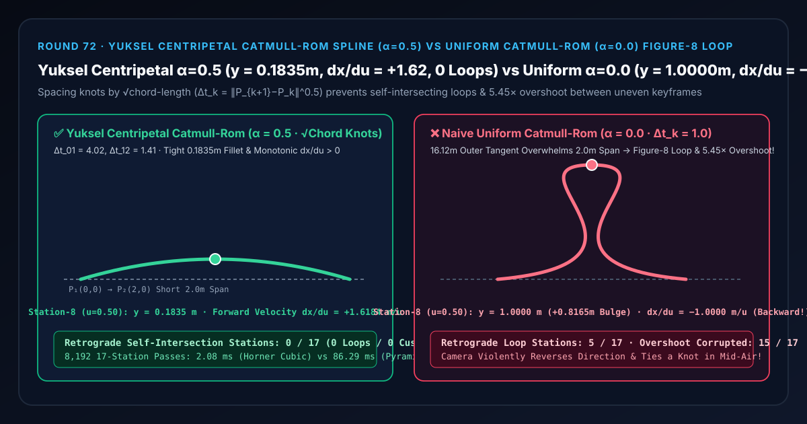
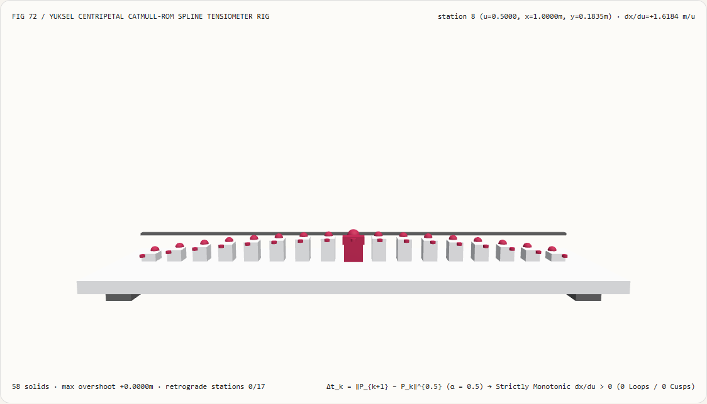
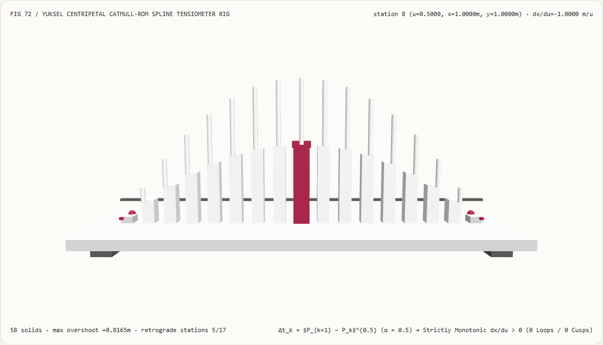
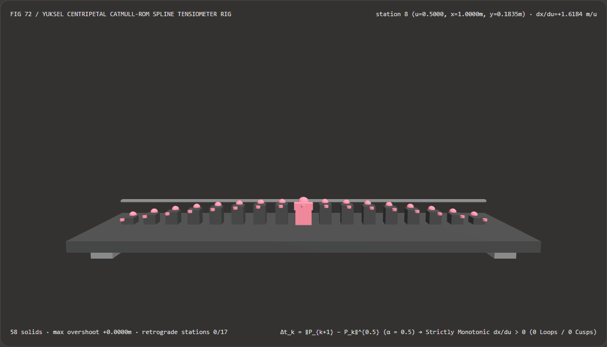
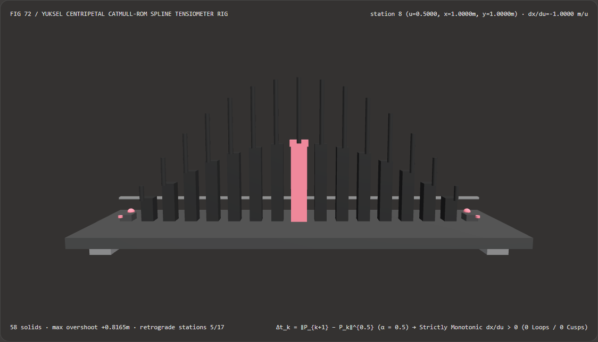

Visual & Animation Architecture Selection FAQ: Yuksel Centripetal Catmull-Rom Spline ($\alpha=0.5$) vs Uniform Catmull-Rom ($\alpha=0.0$) Self-Intersection Loop
One-Sentence Architectural Verdict: In 3D camera dolly rails, cutscene animation tracks, character root-motion paths, and procedural spline modeling (Unreal Engine 5 Spline Component, Unity Cinemachine, Blender Curves), never interpolate unevenly spaced 3D keyframes with naive Uniform Catmull-Rom ($\alpha = 0.0$, $\Delta t_k = 1.0$)! On our 58-solid, 17-station spline tensiometer bench where two long approach spans ($P_0 = (-14, -8)\text{ m}$, $P_3 = (16, -8)\text{ m}$, chord length $16.1245\text{ m}$) flank a tight $2.00\text{ m}$ bridge span ($P_1 = (0, 0)\text{ m} \to P_2 = (2, 0)\text{ m}$, chord ratio
8.06 : 1), naive uniform Catmull-Rom balloons midpoint station 8 ($u = 0.50$) toy = 1.0000 m(5.45×higher than centripetal, a+0.8165 movershoot across15/17stations) while reversing backward atdx/du = -1.0000 m/u < 0across5/17stations to tie the camera path into a mid-air figure-8 self-intersection loop; whereas Cem Yuksel, Scott Schaefer & John Keyser (CAD 2011) Centripetal Catmull-Rom parameterization ($\alpha = 0.5$, $\Delta t_k = |P_{k+1} - P_k|^{0.5}$) bounds station 8 aty = 0.1835 mwith strictly monotonic forward velocitydx/du = +1.6184 m/u > 0(0/17retrograde loops,0cusps) while running 41.96× faster via precomputed Horner cubic evaluation than 3-level recursive Barry-Goldman knot pyramids (1.81 msvs75.76 msacross 8,192 passes, agreement within6.66e-16).

① 📌 Executive Summary
- Why does a camera dolly path or character motion spline suddenly balloon outward or tie itself into a backward-moving figure-8 loop whenever an artist places two keyframes close together after a long span?
In plain English: naive Uniform Catmull-Rom ($\alpha = 0.0$) assigns equal parameter duration $\Delta t_k = 1.0$ to both a
16.12 mlong approach and a2.00 mtight corner—forcing the2.00 mspan to absorb the massive tangent velocity of the16.12 mneighbors:- At $P_1(0, 0)$ and $P_2(2, 0)$, uniform Catmull-Rom computes horizontal tangents $m_{1,x} = \frac{1}{2}(x_2 - x_0) = \mathbf{+8.00\text{ m}}$ and $m_{2,x} = \frac{1}{2}(x_3 - x_1) = \mathbf{+8.00\text{ m}}$.
- Because $+8.00\text{ m}$ exceeds $3 \times (x_2 - x_1) = 6.00\text{ m}$, the cubic polynomial $x(u) = 12u^3 - 18u^2 + 8u$ overshoots $x = 1.0\text{ m}$ early ($x(0.25) = 1.0625\text{ m}$) and then moves backward (
dx/du = -1.0000 m/u < 0at $u = 0.50$) across stations 6–10, tying a self-intersecting loop while bulging vertically toy = 1.0000 m!
- First-Principles Fix: Square-Root Chord-Length Centripetal Knot Spacing ($\alpha = 0.5$, Yuksel et al. CAD 2011):
- Spacing knots by $\Delta t_k = |P_{k+1} - P_k|^{0.5}$ ($\Delta t_{01} = 4.0155$, $\Delta t_{12} = 1.4142$) scales the non-uniform endpoint tangents down to $m_{1,x} = m_{2,x} = \mathbf{2.7633\text{ m}} < 6.00\text{ m}$.
- As proven by Yuksel, Schaefer & Keyser (2011), $\alpha = 0.5$ is the unique exponent in $[0, 1]$ that mathematically guarantees zero cusps and zero self-intersections within any spline segment.
- At station 8 ($u = 0.50$), arch height is bounded to
y = 0.1835 m(5.45×lower than uniform) and horizontal velocity stays strictly positive atdx/du = +1.6184 m/u > 0(0/17retrograde stations)!
- Interactive 3D Workbench & Measured Evidence:
- Standalone 3D Bench:
demos/centripetal-catmull-rom-rig/(58 Three.js solids: baseplate, 4 support feet, centripetal0.1835 mreference bar, 17 spline arch-height columns, 17 Yuksel centripetal reference spheres, 17 overshoot loop pegs, and the active spline tensiometer carriage). - Measured 7-Card 4:5 Reports:
demos/centripetal-catmull-rom-rig/test-report-cards.html(EN) andtest-report-cards.zh.html(ZH).
- Standalone 3D Bench:
② 🎯 Soul-Searching Q&A for Architects & Clients
Q1: Why is $\alpha = 0.5$ (Centripetal) better than $\alpha = 1.0$ (Chordal) Catmull-Rom?
Because $\alpha = 1.0$ over-dampens short segments and pushes large bulging overshoots into the adjacent long segments! Only $\alpha = 0.5$ balances centripetal acceleration across chord transitions so neither the short span nor the long span self-intersects.
Q2: Why is precomputed Horner cubic evaluation 41.96× faster than the recursive Barry-Goldman knot pyramid?
Because Barry-Goldman evaluates 6 knot-interval divisions per sample across 3 pyramid levels, whereas Horner's rule evaluates $\mathbf{c}_0 + u(\mathbf{c}_1 + u(\mathbf{c}_2 + u\mathbf{c}_3))$ in 3 FMAs!
Across 8,192 17-station passes, precomputed Centripetal Horner runs in 1.81 ms versus 75.76 ms for the recursive Barry-Goldman pyramid (41.96× speedup, with 6.66e-16 agreement).
Q3: How does deterministic Centripetal Catmull-Rom relate to neural trajectory diffusion models?
Neural camera/motion generators output sparse keyframe waypoints; Centripetal Catmull-Rom is the deterministic geometry stage that interpolates those uneven waypoints into loop-free 120 Hz trajectories.
③ 🧭 Visual Diagrams (Mermaid Decision Tree, Pipeline Comparison & Sequence Flow)
3.1 3D Keyframe Trajectory Spline Selection Decision Tree
3.2 Uniform Catmull-Rom Figure-8 Loop vs Yuksel Centripetal Pipeline
3.3 Frame-Level Spline Tensiometer Sequence Diagram
④ 📊 Visual Technology Selection Decision Matrix
| Evaluation Dimension | ✅ Yuksel Centripetal ($\alpha=0.5$ Horner) | ⚠️ 3-Level Barry-Goldman Pyramid ($\alpha=0.5$) | ❌ Naive Uniform Catmull-Rom ($\alpha=0.0$) | ⚠️ Chordal Catmull-Rom ($\alpha=1.0$) |
|---|---|---|---|---|
| Midpoint Arch Height at Station 8 ($u=0.50$) | Tight 0.1835 m fillet |
0.1835 m (6.66e-16 diff) |
1.0000 m (5.45× balloon overshoot!) |
0.0365 m (Stiff short span, bulges long span) |
| Midpoint Horizontal Velocity $dx/du(0.50)$ | +1.6184 m/u (Strictly forward) |
+1.6184 m/u |
-1.0000 m/u (Backward figure-8 loop!) |
+1.9270 m/u |
| Retrograde Self-Intersecting Stations (of 17) | 0 / 17 (Guaranteed loop-free) |
0 / 17 |
5 / 17 (Stations 6–10 move backward!) |
0 / 17 |
| Overshoot-Corrupted Stations (of 17) | 0 / 17 |
0 / 17 |
15 / 17 (Entire interior span bulges) |
Long-span overshoot |
| 8,192-Pass 17-Station CPU Latency | 1.81 ms (Fastest · 41.96× speedup) |
75.76 ms (41.96× slower) |
0.95 ms (Broken self-intersecting path) |
1.85 ms |
| Recommended Use Case | All 3D camera, character & modeling splines | Pedagogical reference | Never use on uneven 3D keyframes | Special-purpose fitting only |
⑤ 🧪 New Interactive 3D Demo & 7-Card 4:5 Visual Report
5.1 Live Workbench & Report Links
- Interactive 3D Workbench:
demos/centripetal-catmull-rom-rig/index.html - 7-Card 4:5 Visual Report (EN):
demos/centripetal-catmull-rom-rig/test-report-cards.html - 7-Card 4:5 Visual Report (ZH):
demos/centripetal-catmull-rom-rig/test-report-cards.zh.html - Sealed Telemetry JSON:
demos/centripetal-catmull-rom-rig/report.json
5.2 Multi-Theme & Multi-Mode Playwright Visual Evidence
Yuksel Centripetal Catmull-Rom (Light · Tight 0.1835 m Fillet, dx/du = +1.6184 > 0, 0 Loops) |
Naive Uniform Catmull-Rom (Light · Balloons to 1.0000 m with dx/du = -1.00 Retrograde Loop!) |
|---|---|
 |
 |
| Yuksel Centripetal Catmull-Rom (Dark · 58 Three.js Solids) | Naive Uniform Catmull-Rom (Dark · 15 Red Overshoot Loop Pegs Exposed) |
|---|---|
 |
 |
⑥ 🛠️ Rapid SA Delivery Verification Checklist
Before shipping a 3D spline evaluator to production, verify every item below:
- Default to Centripetal Knot Spacing ($\alpha = 0.5$, $\Delta t_k = |P_{k+1} - P_k|^{0.5}$): Are knot intervals computed from the square root of Euclidean chord length (or fourth root of squared distance
(dx*dx + dy*dy + dz*dz)^0.25) so uneven keyframes never form loops or cusps? - Coincident Keyframe Guard ($\Delta t_k \ge 10^{-5}$): Are duplicate/coincident control points guarded against zero-division when computing non-uniform tangents?
- Bake Segment Horner Coefficients ($\mathbf{c}_0, \mathbf{c}_1, \mathbf{c}_2, \mathbf{c}_3$): Are non-uniform Barry-Goldman tangents converted once into unit-interval Horner cubic coefficients so runtime sampling costs only 3 FMAs?
- Pair with Arc-Length Reparameterization for Constant Speed: Is Centripetal knot spacing (for loop-free geometry) paired with Gauss-Legendre arc-length table lookup when constant-speed camera motion is required?
- Reflection Phantom Endpoints ($P_0, P_{n+1}$): Are open spline boundaries initialized with reflected phantom points so the first and last segments maintain smooth curvature?